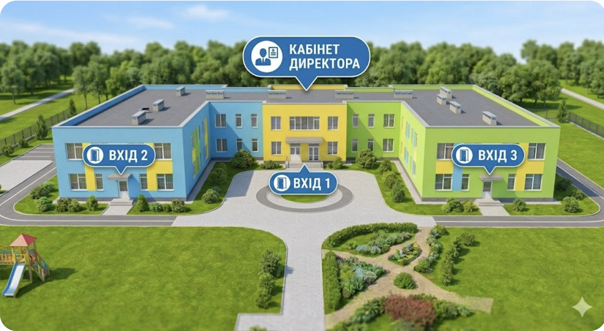

Ласкаво просимо до
нашого садочку
Оберіть напрямок для екскурсії

Оберіть напрямок
Торкніться для відтворення
Ви прибули!
Дякуємо за знайомство з нашим садочком
Оберіть напрямок для екскурсії

Дякуємо за знайомство з нашим садочком